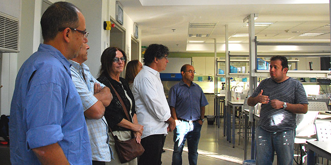

השינויים הטכנולוגיים המהירים והשלכותיהם על מקצועות העתיד, למול המחסור הקיים היום בבעלי מקצוע בתחומים רבים בתעשייה מעלים על סדר היום סוגיות ושאלות רבות.
האתגר של החברה כולה, ובראש ובראשונה של העוסקים בעולמות החינוך והחברה, הוא בחשיבה על עתיד החינוך הטכנולוגי, מהותו ותפקידו, כיצד הופכים אותו לדינאמי ורלוונטי בעולם שבו הידע והטכנולוגיה משתנים במהירות, מקצועות ההווה נעלמים ומקצועות המחר אינם ידועים עדיין. ואם זהו האתגר של אנשי החינוך בכלל, נשאלת השאלה האם והיכן אתגר זה פוגש את בוגרי מנדל בפרט.
למפגש בנושא זה שהתקיים ב-8.11.16 בבאר שבע הוזמנו בוגרי בי"ס מנדל למנהיגות חינוכית שעתיד החינוך הטכנולוגי מעסיק אותם והם מוכנים לקחת חלק בתהליך "שולחן עגול" – תהליך לימוד ארוך טווח שסופו תוצרים המוצגים למקבלי החלטות.
את המפגש, שבו השתתפו עשרה בוגרים, אירח
ד"ר גידי קפלן, בוגר מחזור י"ט, המשמש כמנהל המרכז האזורי הטכנולוגי בבאר שבע, הנקרא גם "האקדמיה הצעירה לחדשנות וטכנולוגיה". המפגש היה בגדר התנעה מחדש של שולחן עגול בנושא החינוך הטכנולוגי שהתקיים במסגרת כנס בוגרי מנדל "מנהיגות תחילה" בפברואר 2015.
בדיון שהתקיים העלו המשתתפים שאלות רבות הנוגעות לעצם הנושא – חינוך טכנולוגי? חינוך מקצועי? כמו כן ניסו להגדיר סוגיות מרכזיות: הסללה, פריפריה, פערים חברתיים.
בסיום המפגש החליטו המשתתפים לצאת לדרך משותפת, שתימשך כשנה, ואשר תוקדש ללימוד עומק של הנושא בתהליך שיכלול מיפוי; איסוף וקריאת חומרים בנושא החינוך המקצועי-טכנולוגי לרבות דוחות של ועדות שהוקמו למטרה זו; בחינת מודלים וחלופות מהארץ ומהעולם, ועוד. על התוצר שאליו היו רוצים להגיע וכיצד יהיה אפשר להשפיע על מקבלי ההחלטות ידונו במפגשים הבאים.

{kind=link}